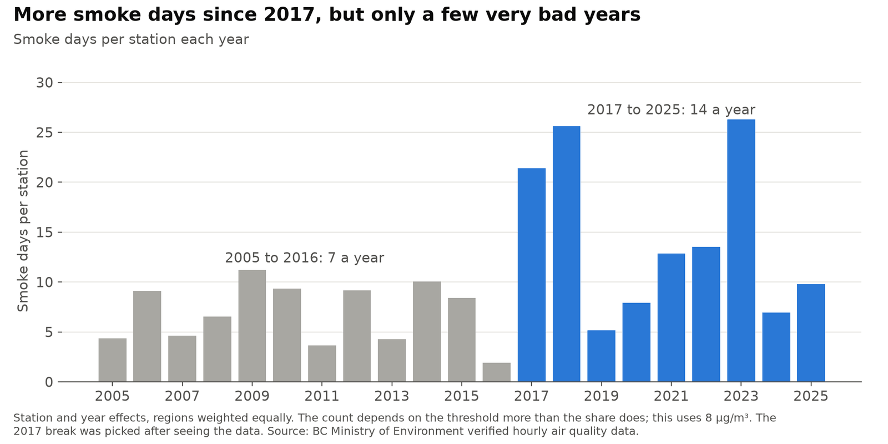
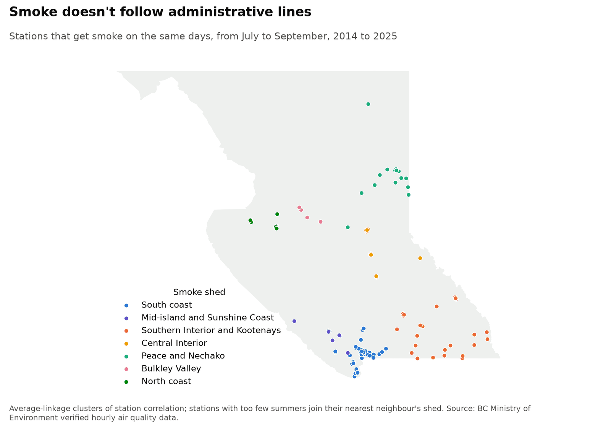
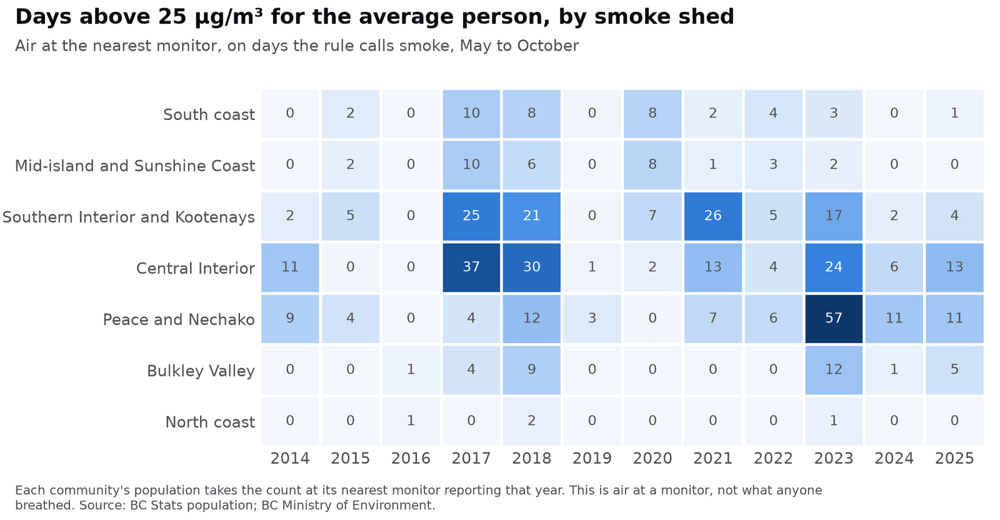
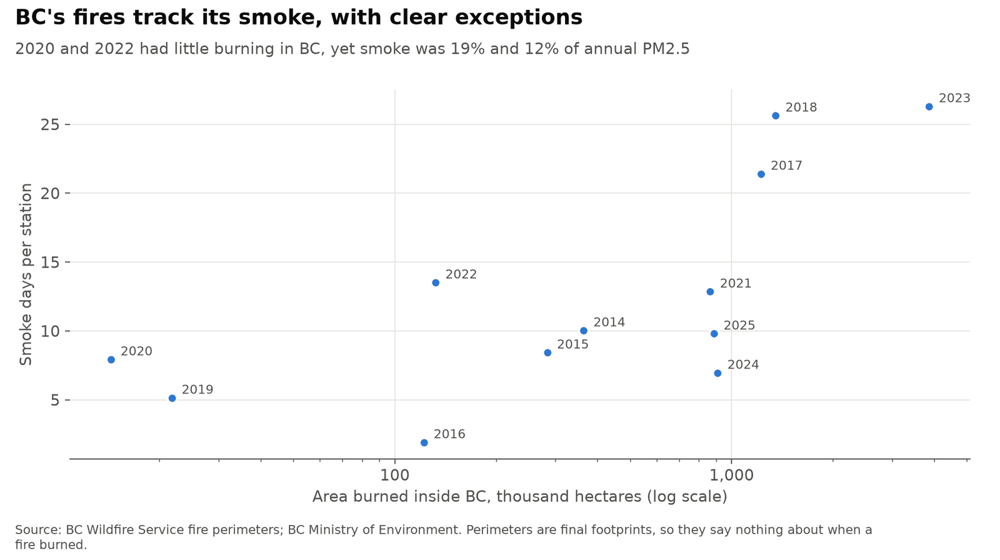
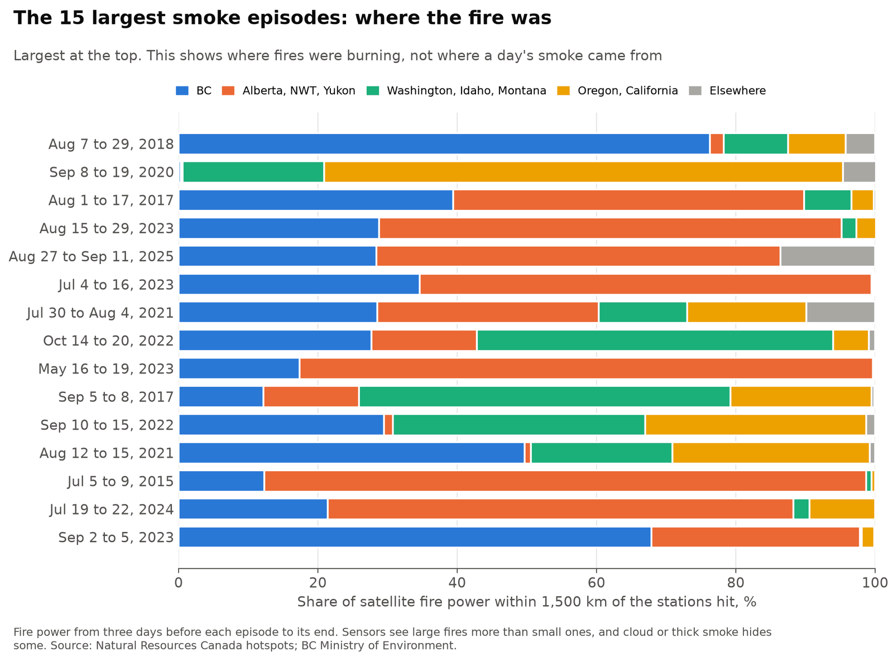

How much of BC's fine-particle pollution is wildfire smoke?
BC's air monitors measure PM2.5 but can't tell what it came from. This project separates smoke from everything else in 21 years of verified readings, using a simple rule, then checks that rule against BC's own list of smoke days and against satellite smoke maps. Results are as of November 2026, with verified data through 2025. The dashboard follows the current season.
Personal project: my own analysis of publicly available data. It is not associated with my work for any current or past employer and does not represent their views. It measures air at monitors and makes no claims about health.
At a glance
| Question | Methods | Answer |
|---|---|---|
| How much of BC's PM2.5 is smoke? | Rule-based detector, checked against BC's list and satellite maps; station and year effects | About a third in 2018 and 2023 (30% to 35%), and 2% to 27% in other years since 2014. Smoke explains 74% of the year-to-year swings. |
| Is the rest getting cleaner, and smoke getting worse? | Theil-Sen trends, Kendall tests, exact permutation test | The rest is falling about 0.07 µg/m³ a year (0.03 to 0.10). Smoke has grown, but three years drive that. |
| Which places get smoke together, and who lives there? | Hierarchical clustering, resampled seasons, population at the nearest monitor | Seven smoke sheds that cross regional lines. The average person's days above 25 µg/m³ ran from under 1 to 12 a year. |
| How much arrives from outside BC? | Case studies of the 15 largest episodes, with satellite fire detections and fires BC names | Sometimes nearly all of it: in September 2020, 99% of the nearby fire power was outside BC. No percentage for each year is possible from this data. |
Explore each station's seasons
Hover or tap a station. Orange circles are fires of at least 1,000 hectares that year, placed where they started and sized by final area. BC only: fires outside the province aren't drawn.
One row per year, May to October. Orange to dark red: smoke days at under 25, 25 to 50, 50 to 100 and over 100 µg/m³. Grey: other days, darker at 10 and 25 µg/m³. White: no reading.
The threshold changes what counts as a smoke day in the charts on this page. The choice matters more for counts of days than for smoke's share of the year.
2. Is the rest getting cleaner, and smoke getting worse?
As measured, annual PM2.5 has no trend since 2005 (−0.01 µg/m³ a year, 95% range −0.06 to +0.06). With smoke removed it falls 0.07 a year (0.03 to 0.10), and 0.11 a year since 2014 (0.05 to 0.19), when the instrument correction matters least. Smoke has been hiding a slow improvement in the rest of the air.

Is smoke getting worse? Smoke's share of annual PM2.5 rose 0.6 points a year since 2005 (0.2 to 1.3), and smoke days averaged 14 a year from 2017 on against 7 before. An exact permutation test gives p = 0.005 for that gap, and p < 0.001 for the gap in smoke's share (6% before 2017, 19% from then on), but I picked 2017 after seeing the data, so those are generous. Leave out the three worst years and the trend in smoke days is +0.15 a year (−0.13 to +0.46), which includes no change. Twenty-one seasons with three extreme ones can't separate a lasting shift from a run of bad years.
3. Which places get smoke together, and who lives there?

Clustering stations on how their summer readings move together gives seven groups of 3 to 32 stations, stable when the seasons are resampled (adjusted Rand index 0.93 against the full data). The smallest, Bulkley Valley, is only Smithers, Houston and Burns Lake, so it rests on very little. The groups overlap only partly with BC's monitoring regions (0.61). Greater Victoria and the south island go with Vancouver and the Fraser Valley, not with Nanaimo or Courtenay. Prince George goes with Quesnel, not the Peace.

Weighting by where people live changes which years stand out. The average British Columbian's nearest monitor had 12 smoke days above 25 µg/m³ in 2017 and 11 in 2018, but 7 in 2023, even though 2023 was as bad as any year across stations. In 2023 the smoke sat over the Peace and the north, where few people live. 2020 reached 7 days, mostly from one September episode. This counts air at a monitor, not what anyone breathed: most time is spent indoors, and the nearest monitor can be far away.
4. How much arrives from outside BC?

Area burned in BC and smoke days rank closely together (0.72), but with exceptions. In 2020 about 14,000 hectares burned in BC, the smallest area of these twelve years, yet smoke was 19% of annual PM2.5. In 2022, 132,000 hectares burned, and BC's own list names the NW Pasayten Complex in Washington for 165 of its 296 flagged station-days.

Of the 15 largest episodes, 4 had most of the fire power within reach in the US: September 2017, September and October 2022, and September 2020, the second largest of all, when 99% was outside BC. BC led in 3, including August 2018, the largest. In the other 8, most of it was in Alberta, the Northwest Territories or spread across several places, which doesn't settle whether that smoke reached BC.
That is as far as this data goes. A regression of each region's smoke on fire power by province failed on held-out seasons (median R² −0.05), because it knows nothing of the wind. Splitting smoke by source properly needs transport modelling.
Tried and dropped
A next-day forecast seemed the obvious machine-learning piece, so I tested it on 12 held-out seasons. Gradient boosting on the monitor network cut average error only 6% against simply assuming tomorrow equals today (3.00 against 3.20 µg/m³). It caught fewer days above 25 µg/m³ (46% against 65%) with fewer false alarms (26% against 35%). On the first day of high readings, the day a forecast is for, it caught 8%. Adding satellite fire power by distance raised that to 10%. Conformal 90% ranges covered 90% of all days but only 44% of days above 25, when they matter most. Smoke arrives on the wind, and existing smoke forecast models already use it, so I dropped this.
I also considered measuring whether people avoid smoke using bike-share trips, the one economic question here. Mobi's licence limits publishing its data and says that accessing the data accepts its terms, so it isn't open data in the sense this project uses, and I left it out.
Limits
- The rule uses PM2.5 alone. Spring and fall open burning, dust and regional pollution can pass as smoke, and light smoke can be missed. There is no ground truth for lighter days: 14% of May to October days at 10 to 15 µg/m³ get flagged, with little to confirm them.
- Satellite polygons show smoke anywhere overhead. About 51% of station-days under one had less than 2 µg/m³ of excess at the ground, so they are strong evidence that a flagged day is real and weak evidence that an unflagged day is clean.
- Counts of smoke days depend on the threshold: 5,517 flagged station-days at 12 µg/m³ since 2014, 8,278 at 8 and 13,203 at 5. Shares are far steadier, so they are the headline.
- Usual levels come from the same readings they are tested against. A median resists smoke, but long smoke seasons can still raise it a little.
- Instrument gaps are estimated on seasonal medians and applied as flat offsets. How instruments compare in heavy smoke isn't tested, and the T640 has only one or two years behind it at most stations.
- The north has few monitors, and one station can stand for a very large area. Regions are weighted equally to offset the crowding in the Lower Mainland, which is a choice: a population-weighted view (above) tells a different story.
- Fire perimeters are final footprints with one date, so they can't show when a fire burned. Satellites miss fires under cloud or thick smoke, and their sensors changed over the years.
- Nothing here estimates illness, deaths or costs, or says what any level means for a person's health.
Data
BC Ministry of Environment verified hourly air quality data, 2005 to 2025, station list, station history, list of transboundary flows and exceptional events, and annual results; unverified year-to-date data for the dashboard; BC Wildfire Service historical fire perimeters and incident locations; BC Stats sub-provincial population estimates; census subdivision boundaries; natural resource region boundaries for the map. Satellite hotspots from Natural Resources Canada's Canadian Wildland Fire Information System, and smoke polygons from NOAA's Hazard Mapping System.
Contains information licensed under the Open Government Licence - British Columbia and the Open Government Licence - Canada.